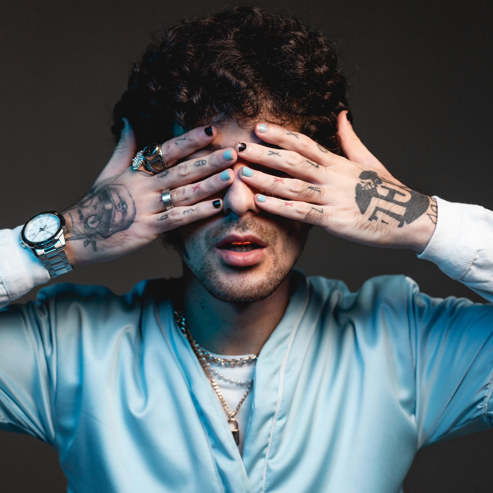

Eduardo Duzz
Eduardo da Silva, nascido em Campinas (SP), é um dos artistas mais versáteis e produtivos da cena do Rap/Trap brasileiro. Sua trajetória é marcada por uma transição rara: ele começou como criador de conteúdo no YouTube e conseguiu migrar com total credibilidade para a música, tornando-se uma referência técnica e lírica.
Pontos-Chave da Carreira:
- A Origem: Ganhou notoriedade inicialmente com rimas rápidas e crônicas, usando a internet para construir uma base de fãs sólida antes mesmo de grandes gravadoras baterem à sua porta.
- O Coletivo UCLÃ: Duzz é um dos pilares da UCLÃ, um dos selos e coletivos de maior impacto no Brasil. Junto com nomes como Sos e Sueth, ele ajudou a definir o padrão de qualidade estética e sonora do trap nacional.
- Versatilidade Musical: Ele é conhecido por "atacar" qualquer tipo de batida. Vai do Boom Bap lírico (focado na letra e na rima clássica) ao Trap mais moderno e agressivo, sempre com um toque de melancolia e introspecção.
- O Álbum "Surreal": Este projeto (que usamos como base para o site) é considerado um divisor de águas. Nele, Duzz explora temas como saúde mental, o lado sombrio da fama e reflexões pessoais, tudo envelopado em uma estética visual roxa e dark.
